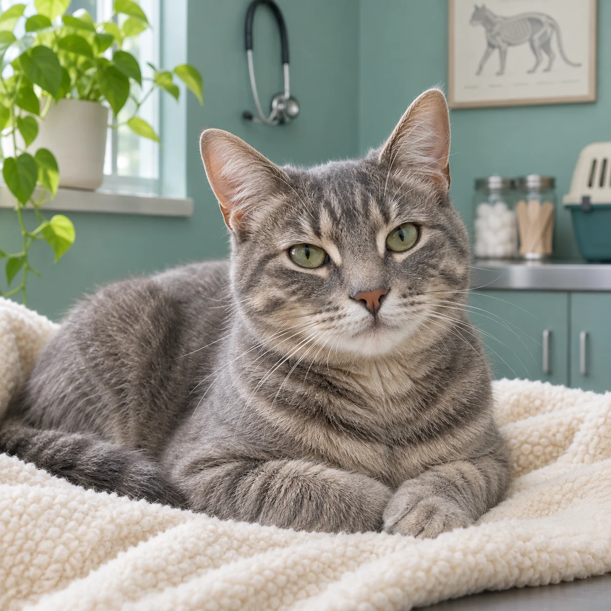

Consulta clínica
Un encuentro para revisar su estado general, conversar sobre sus hábitos y definir los próximos pasos según lo que necesite.
Desde la primera consulta hasta los cuidados de todos los días. Cada etapa trae nuevas preguntas; estamos para escucharlas.
Propuesta de servicios para esta demo. Disponibilidad a confirmar.Un encuentro para revisar su estado general, conversar sobre sus hábitos y definir los próximos pasos según lo que necesite.
Revisión de la libreta sanitaria y orientación sobre el plan de cuidados para su edad y su rutina.
Tiempo para adaptarse y un trato tranquilo. Contanos antes de venir si el traslado o la consulta le generan estrés.
Un espacio para revisar su evolución y conversar sobre las indicaciones dadas en la consulta.

Contanos qué le gusta, qué le preocupa y cómo suele sentirse durante una visita. Conocerlo también es parte de cuidarlo.
Quiero hacer una consultaContanos cómo se llama y qué necesita. Te leemos.